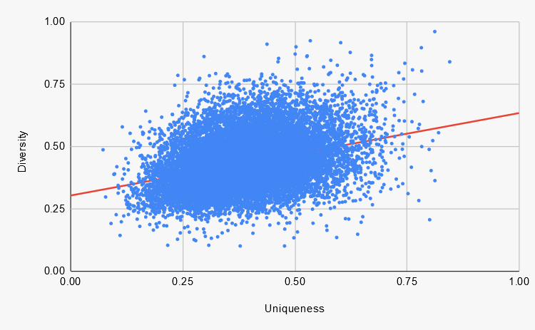
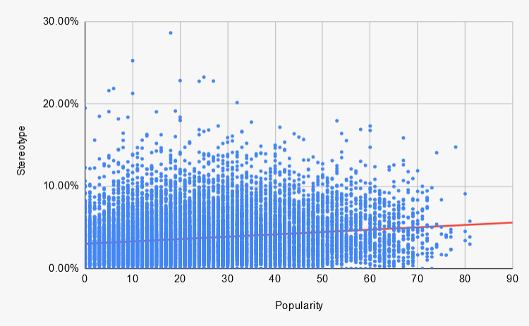
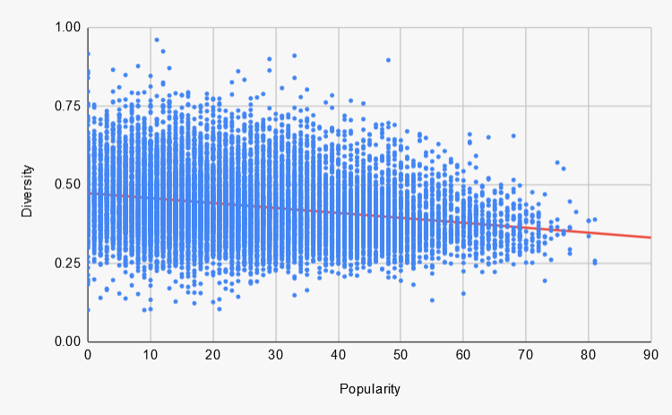
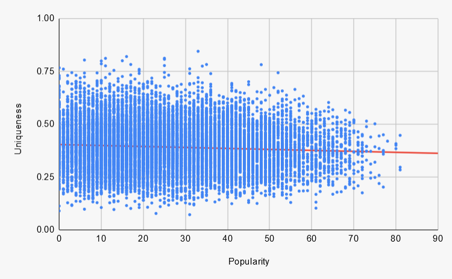

My Analysis
Introduction
My goal for this analysis is not to convince you that my favorite artist is objectively the best or that your favorite sub-genre is terrible. Instead, I will try to present interesting trends and tidbits that I discovered while creating this website. I hope that you can utilize this website to explore the data and reach your own conclusions about Country Music, whatever that may be.
Table of Contents
- Overall Trends
- Genres
- Words
- Women in Country
- Artists
Overall Trends
This section will cover some general trends and correlations I noticed while looking at the data. Each graph presented in this section will graph two different statistics versus each other to determine if there is a correlation between them. In every scatter plot, each dot represents a song, and the red line represents the trendline.
Uniqueness VS Diversity
Below is a graph of the uniqueness vs. the diversity of all of the songs in the database. The upward slope of the trendline shows a correlation between the uniqueness and diversity of a song. In General, the higher the uniqueness, the higher the diversity and vice versa. This is not too surprising because the less repetitive the song, the more unique words that will have to be used.
Popularity VS Stereotype
The rest of these graphs will have popularity represented on the x-axis. Below, the song's popularity is graphed vs. the song's stereotypicalness, where each dot represents a song. Here the trendline shows that, in general, the more popular the song, the more stereotypical the song. However, it is important to note that this correlation is not that strong because the trendline slope is relatively flat.
Popularity VS Diversity
In the graph below, the song's popularity is graphed vs. the song's diversity, where each dot represents a song. Here the trendline shows that, in general the more popular the song, the less lyrically diverse the song. In other words, popular songs are generally more repetitive.
Popularity VS Uniqueness
Below, the song's popularity is graphed vs. the song's uniqueness, where each dot represents a song. Here the trendline is almost flat, so the correlation is weak. That being said, more popular songs are slightly more likely to be less unique.
Genres
In this section, I will cover the genres with the most artists that have interesting characteristics. The genres are in no particular order. Keep in mind that there are 29 total genres.
All Artists (Average)
The All Artists genre is not really a genre. I created it to easily find the averages of the entire database to compare other genres. One thing I find interesting is that the All Artists genre is the 10th most stereotypical genre out of the 29 genres analyzed. This means that a majority of genres are below average in stereotypicalness.
| Statistic | Ranking |
|---|---|
| Popularity | 9/29 |
| Uniqueness | 15/29 |
| Diversity | 17/29 |
| Stereotype | 10/29 |
Contemporary Country
Contemporary Country is the most popular genre, and 37 of the top 50 most popular artists belong to this genre. What I find interesting is that this genre follows the trends identified in the overall trends section. Contemporary Country ranks fairly low in both uniqueness and diversity but high in stereotypicalness. In fact, 31 of the top 50 least diverse artists belong to the Contemporary Country Genre and include big names like Gabby Barrett, Kane Brown, and Dan + Shay.
| Statistic | Ranking |
|---|---|
| Popularity | 1/29 |
| Uniqueness | 22/29 |
| Diversity | 24/29 |
| Stereotype | 4/29 |
Alternative Country
Alternative Country is aptly named because it is the statistical antithesis to Contemporary Country. It ranks exceptionally high in uniqueness and diversity and low in stereotypicalness. However, it is worth noting that Alternative Country comes in well below average in terms of popularity.
| Statistic | Ranking |
|---|---|
| Popularity | 23/29 |
| Uniqueness | 2/29 |
| Diversity | 1/29 |
| Stereotype | 24/29 |
Country Rap
Country Rap is a mystifying genre from a statistical perspective. It breaks some of the trends identified in the previous section of my analysis and follows others. Despite being the most lyrically unique genre, it is one of the least diverse, breaking the trend. But in line with another trend, it is one of the most popular genres and one of the most stereotypical.
| Statistic | Ranking |
|---|---|
| Popularity | 4/29 |
| Uniqueness | 1/29 |
| Diversity | 25/29 |
| Stereotype | 1/29 |
Words
Here are some interesting trends I found in the word data.
Most Popular Types of Alcohol
| Word | Number of Uses |
|---|---|
| Beer | 1835 |
| Whiskey | 1725 |
| Wine | 1035 |
| Moonshine | 270 |
| Tequila | 229 |
| Champagne | 173 |
| Bourbon | 143 |
| Gin | 101 |
| Rum | 98 |
| Vodka | 28 |
Most Popular Types of Drugs
| Word | Number of Uses |
|---|---|
| Cigarette | 494 |
| Weed | 187 |
| Pot | 115 |
| Cocaine | 110 |
Most Popular Swear Words
| Word | Number of Uses |
|---|---|
| Hell | 3104 |
| Damn | 2090 |
| Shit | 587 |
| Ass/Asshole | 557 |
| Bitch | 309 |
| Fuck | 220 |
Top 20 Most Mentioned States
| Word | Number of Uses |
|---|---|
| Texas | 590 |
| Tennessee | 579 |
| California | 423 |
| Georgia | 320 |
| Mississippi | 311 |
| New York | 237 |
| Alabama | 168 |
| Kentucky | 148 |
| Louisiana | 124 |
| Colorado | 111 |
| Oklahoma | 111 |
| Virginia | 83 |
| Arkansas | 65 |
| Kansas | 62 |
| Florida | 58 |
| Arizona | 52 |
| Ohio | 52 |
| Illinois | 41 |
| Montana | 41 |
| Indiana | 30 |
Most Popular Days of the Week
| Word | Number of Uses |
|---|---|
| Friday | 770 |
| Sunday | 661 |
| Saturday | 566 |
| Monday | 189 |
| Tuesday | 76 |
| Wednesday | 40 |
| Thursday | 33 |
Most Popular Family Members
| Word | Number of Uses |
|---|---|
| Father/Dad | 1664 |
| Mother/Mom | 818 |
| Brother | 790 |
| Sister | 301 |
| Grandfather/Grandpa | 100 |
| GrandMother/Grandma | 91 |
**Past this point my analysis becomes much more subjective and is influenced by my own personal thoughts and opinions**
Women in Country
There are woefully few women in Country Music and even fewer when considering the most popular artists. Only 9 out of the top 50 most popular artists were women or women majority bands. So here is a list of my favorite female artists that are making great music.
Artists I wanna talk about
Here is a list of artists with some quality or characteristic that I found interesting (mostly). There is no particular order in which these artists are presented.
Tyler Childers
When 23 of the top 30 most popular artists on Spotify belong to the Contemporary Country genre, Tyler Childers stands out at fourth most popular. Whether you want to classify him as Indie or Americana or any other sub-genre, his musical style differs significantly from the other most popular artists. He is proof that you don't have to conform to the Nashville radio sound to be popular. You should definitely give him a listen if you haven't already.
Colter Wall
Colter Wall stands out to me, not just because of his incredible voice, but his unprecedented statistics. He ranks extremely high compared to other artists in terms of uniqueness and diversity at 12th and 32nd, respectively. These numbers back up what his avid fans already know about him: he is a great storyteller. One of my personal favorites is his murder ballad, Kate McCannon. I need to note that his Imaginary Appalachia album, released in 2015, somehow slipped through the cracks and did not make it into the database. In addition, he released another album, Western Swing and Waltzes, in 2020, and that also did not make it into the database because of the timing of which it was released.
Jason Hawk Harris
Jason Hawk Harris does not really have some quality or characteristic that stuck out to justify including in this list. I had a hard enough time narrowing it down to just 5 artists. Yet, he was the one artist that was a sure lock for this list. He has been my favorite artist for about the past year and a half. His popularity rating is absurdly low for the quality of music he is creating. It’s hard for me to pick one song of his to recommend, so you should listen to all of them.
Jason Aldean
Jason Aldean has been a staple in the country music scene for more than a decade. He is tied for first place with Upchurch for the number of songs in the database with a whopping 91. He is the 27th most popular artist and the 31st least unique. Jason Aldean helped define country music during the early 2010s with his rocking "Bro-Country" style. My favorite song of his is My Kinda Party.
Sturgill Simpson
Sturgill Simpson jumped out at me because of his high diversity (31st) and high popularity (35th). He is one of just 13 other artists in the top 50 most popular not to be classified as Contemporary Country. Grady Smith rightly called him one of the "Avengers of Independent Country Music."